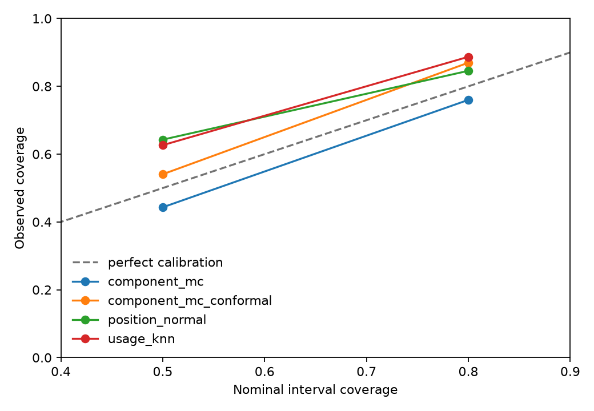

Fantasy Range Projections
A complete walkthrough of how historical football data becomes a Week 1 range for each RB, WR, and TE.
Past player stats, the active roster, each team’s prior volume, and the Week 1 schedule.
Team volume, player opportunities, catches, yards, touchdowns, and the effect of the opponent.
A range of plausible PPR outcomes, not a claim that one final score is certain.
Build the historical player table
The starting table has one row for each player in each game from 2021 through 2025. The important idea is to separate a player’s share of team work from the total work available to that team.
| Seasons | Positions | Scoring |
|---|---|---|
| 2021–2025 | RB, WR, TE | 1 PPR, 0.1 yards, 6 TD |
team_targets = sum(targets) team_rush_attempts = sum(carries) team_pass_attempts = sum(QB attempts) target_share = player_targets / team_targets rush_share = player_carries / team_rush_attempts
| Player | Targets | Carries | Target share | Rush share |
|---|---|---|---|---|
| C. McCaffrey | 10 | 22 | 31.3% | 71.0% |
| R. Pearsall | 7 | 0 | 21.9% | 0.0% |
| J. Jennings | 5 | 0 | 15.6% | 0.0% |
Create player priors
A Week 1 forecast cannot use Week 1 usage. It starts with what the player did in completed seasons, gives recent seasons more weight, and uses the player’s new team for the amount of team work available.
Recent seasons matter more. For three equal length seasons, the latest supplies 51% of the total weight, so a player’s current role matters without erasing earlier evidence.
Small samples borrow from the position. A rookie starts near the RB, WR, or TE average; that pull fades out by 48 prior games.
weight for a 2024 game = 0.60 ^ 2
| Player | Prior games | Raw player rate | Position average | Average strength | Rate used |
|---|---|---|---|---|---|
| Christian McCaffrey | 61 | .217 | .064 (RB) | 0.00 | .217 |
| Malik Nabers | 19 | .331 | .131 (WR) | 8.46 | .269 |
How to read this: McCaffrey has passed the 48 game threshold, so his rate remains unchanged. Nabers has only 19 prior games, so his raw .331 target share is pulled 6.2 percentage points toward the WR average before it enters the simulation. The model preserves the signal; it just trusts it less.
| Input | Value | Source |
|---|---|---|
| Expected pass attempts | 33.76 | Mean across San Francisco’s 17 games in 2025 |
| Expected rush attempts | 28.29 | Mean across San Francisco’s 17 games in 2025 |
Important: the model does not feed a player’s old fantasy point total back into the forecast. Fantasy points are held out for evaluation; the player priors are workload and efficiency rates.
Represent role uncertainty
A player can have a reasonable expected role without having a certain role. The model widens the possible target and carry shares for rookies, players on a new team, and players with limited or unstable history.
uncertainty = sample size + team change
+ rookie status + past share volatility
share concentration = 70 × (1 - uncertainty) + 5| Player | Prior games | New team or rookie? | Role uncertainty | Interpretation |
|---|---|---|---|---|
| Christian McCaffrey | 61 | No | .121 | His share stays fairly close to recent usage in most draws |
| Jonah Coleman | 0 | Rookie | .716 | His possible share runs from small to meaningful |
Apply a small matchup adjustment
The Week 1 opponent is known in advance. The model checks what that defense allowed to the player’s position, pulls the result toward the league average, and limits the effect to 8% in either direction.
final points = simulated PPR points × adjustment, limited to .92 through 1.08
| Player | Opponent | Position | Adjustment | Meaning |
|---|---|---|---|---|
| Christian McCaffrey | LA | RB | .927 | A 7.3% reduction after pooling and the cap |
| Puka Nacua | SF | WR | 1.015 | A 1.5% increase after pooling and the cap |
This is deliberately modest. It reflects previous points allowed by that defense to the same position; it does not pretend to know every injury, scheme change, weather condition, or game script.
Simulate football events, then score them
The model runs 20,000 plausible games for each player. In every draw it creates a team workload, assigns the player a share, turns the work into football stats, and scores the result under full PPR.
- Draw a plausible number of team pass attempts and rush attempts.
- Draw the player’s target share and carry share. Higher role uncertainty means a wider draw.
- Turn shares into discrete targets and carries.
- Draw receptions conditional on targets.
- Draw positive, right skewed yards conditional on receptions and carries.
- Draw receiving and rushing touchdowns using strongly shrunk touchdown rates.
- Convert the resulting stat line to PPR fantasy points, then apply the small opponent multiplier when the Week 1 matchup is known.
| Stat drawn | Starts with | Rate used | What happens in one simulation |
|---|---|---|---|
| Receptions | Targets | .815 catches per target | Draw catches from the target total. The catch probability can move slightly from game to game. |
| Receiving yards | Receptions | 9.17 yards per reception | Draw a positive yards per catch value, then multiply it by receptions. |
| Rushing yards | Carries | 4.26 yards per carry | Draw a positive yards per carry value, then multiply it by carries. |
| Receiving TDs | Targets | .058 TDs per target | Draw from a Poisson distribution centered on targets × .058. |
| Rushing TDs | Carries | .031 TDs per carry | Draw from a Poisson distribution centered on carries × .031. |
| Fantasy points | All stat draws | Full PPR, matchup .927 | Receptions + .1 × total yards + 6 × total TDs; then multiply by the matchup adjustment. |
Where the rates come from: each is a recency weighted player rate from Step 2, with limited histories pulled toward the position average. McCaffrey has 61 prior games, so his own history supplies the rates shown above.
Why use distributions: the beta binomial allows catch rate to move from game to game. Gamma yardage stays positive and allows occasional larger gains; Poisson touchdown draws keep touchdowns rare rather than assigning a fractional touchdown to every game.
| Player | Pos | Team pass | Team rush | Target share | Rush share | Catch rate | Role uncertainty | Matchup |
|---|---|---|---|---|---|---|---|---|
| Christian McCaffrey | RB | 33.76 | 28.29 | .217 | .620 | .815 | .121 | .927 |
| Bijan Robinson | RB | 32.06 | 28.06 | .176 | .579 | .790 | .120 | .938 |
| Puka Nacua | WR | 35.18 | 27.35 | .304 | .025 | .737 | .125 | 1.015 |
| Jonah Coleman | RB | 36.06 | 26.82 | .064 | .285 | .533 | .716 | .920 |
Why simulate instead of fit one large machine learning model? There are few true Week 1 examples, and a direct model can hide why a forecast moved. Here, each change has a visible source: volume, role, efficiency, touchdowns, or matchup.
Test whether the ranges are useful
The evaluation replays past Week 1s. For the 2025 test, the model is built only from 2021–2024, then compared with the real 2025 result. Repeating that process shows both point accuracy and whether the stated ranges are honest.
| Model | Median error | 50% coverage | 80% coverage | 80% range width |
|---|---|---|---|---|
| Component model | 2.84 | .439 | .757 | 11.27 |
| Component model + calibration | 2.87 | .541 | .874 | 14.43 |
| Position average baseline | 2.82 | .635 | .844 | 12.11 |
| Similar usage baseline | 3.10 | .626 | .891 | 14.91 |

The raw component range was a little narrow: its 80% range caught 75.7% of actual outcomes. Calibration widens the published range and raises that to 87.4%. That is cautious rather than perfect, but it is preferable to presenting an overconfident range.
Read the Week 1 projections
The final table starts with the active roster and schedule, then combines player history, team volume, role uncertainty, matchup, and 20,000 simulations. The mean and the full simulated distribution already include the matchup adjustment; the published percentiles then receive the walk forward calibration from the previous step.
| Player | Pos | Opponent | Mean | P10 | P50 | P90 | Role uncertainty |
|---|---|---|---|---|---|---|---|
| Christian McCaffrey | RB | LA | 20.58 | 8.94 | 19.14 | 35.05 | .121 |
| Bijan Robinson | RB | PIT | 16.78 | 6.84 | 15.50 | 29.47 | .120 |
| Ja'Marr Chase | WR | TB | 17.96 | 6.27 | 16.26 | 34.27 | .121 |
| CeeDee Lamb | WR | NYG | 16.30 | 5.62 | 14.65 | 31.71 | .125 |
| Trey McBride | TE | LAC | 12.08 | 4.17 | 10.86 | 20.93 | .132 |
Mean versus P50: both are based on the same matchup adjusted simulation draws. The mean is the average of every draw. P50 is the middle draw and is then calibrated before publication. Touchdowns make outcomes right skewed, so the mean is usually above P50 even before calibration.
Worked final calculation
Choose a player. The widget replays the same 20,000 draws used for the production projection, then shows the football-stat arithmetic, matchup adjustment, and reported calibrated P50.